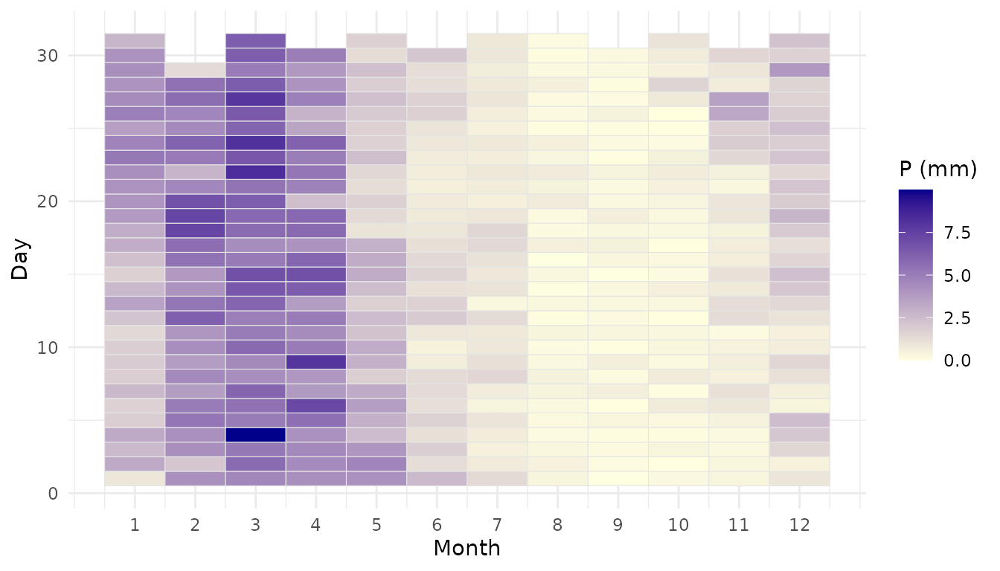
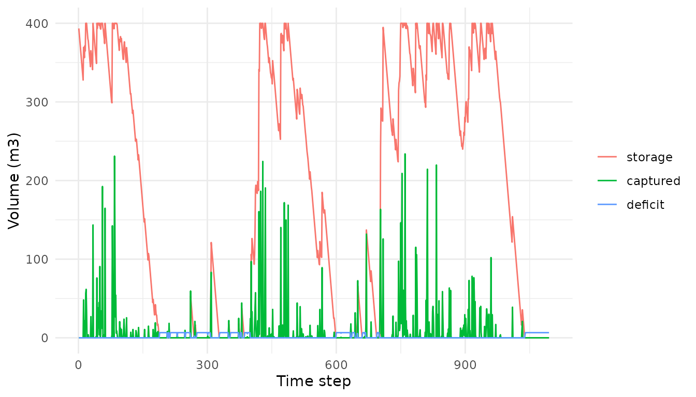

Worked example: rainwater harvesting at IFPB-PI
Source:vignettes/ifpb-pi-case-study.Rmd
ifpb-pi-case-study.RmdOverview
This vignette walks through a complete rainwater-harvesting analysis
with rharv, applied to the Federal Institute of Paraíba,
Campus Princesa Isabel (IFPB-PI), a campus in the Brazilian semi-arid
region. It shows how to go from a daily rainfall series to system
metrics and design figures using the package’s generic functions.
Anything specific to this application (the campus parameters and the
scenarios) is defined in this vignette rather than shipped with the
package.
The analysis uses a daily water-balance model: the captured volume
(Vdisp = P * A * C * eta) feeds the reservoir mass balance,
simulated day by day. In this application the runoff coefficient and the
system efficiency are taken together as a single C = 0.85
(runoff = 0.85, efficiency = 1). Volumes are
in cubic metres (m³) and the reservoir starts full
(initial = capacity). The daily-simulation approach and the
available-volume relation follow established references (Souza, 2015;
ABNT NBR 15527).
Data
rharv ships the cleaned daily precipitation series of
the Princesa Isabel gauge (precip_pi) and the campus roof
areas (areas_pi).
str(precip_pi)
#> 'data.frame': 38716 obs. of 2 variables:
#> $ date : Date, format: "1912-01-01" "1912-01-02" ...
#> $ value: num 0 0 0 0 0 0 0 0 0 0 ...
areas_pi
#> block area_m2
#> 1 Acadêmico 1509.4008
#> 2 Administrativo 1161.4282
#> 3 Biblioteca 775.5286
#> 4 Refeitório 723.7396
area_total <- sum(areas_pi$area_m2) # total catchment area (m2)
area_total
#> [1] 4170.097Day-of-year precipitation climatology (the “precipitation matrix”):
rh_plot_climatology(precip_pi)
Demand
The campus serves 1089 people at about 6.03 L/person/day:
demand <- rh_daily_demand(population = 1089, per_capita_l = 6.03) # m3/day
demand
#> [1] 6.56667Scenarios
We compare two precipitation scenarios, built by sub-setting the series:
- C1 is the full historical series (1912 to 2019).
- C2 is the last ~30 years (from 1989), a drier, more pessimistic window.
year <- as.integer(format(precip_pi$date, "%Y"))
p_c1 <- precip_pi$value
p_c2 <- precip_pi$value[year >= 1989]
sim_c1 <- rh_simulate(p_c1, demand = demand, area = area_total, capacity = 400,
runoff = 0.85, efficiency = 1, initial = 400)
sim_c2 <- rh_simulate(p_c2, demand = demand, area = area_total, capacity = 400,
runoff = 0.85, efficiency = 1, initial = 400)
sim_c1
#> <rharv_sim>
#> steps: 38716 | area: 4170.097 m2 | capacity: 400 m3 | timing: after_demand
#> attendance: 69.3% | reliability: 68.5% | days unmet: 12199
#> totals (m3): deficit 78150.18 | overflow 130953.28 | usable 175685.02Annual results
Dividing the totals by the number of years gives the average annual performance of the system under each scenario:
n_years_c1 <- length(unique(year))
n_years_c2 <- length(unique(year[year >= 1989]))
results <- data.frame(
Variable = c("Overflow (m3/yr)", "Deficit (m3/yr)",
"Usable volume (m3/yr)", "Attendance (%)"),
C1 = c(sim_c1$summary$overflow_total / n_years_c1,
sim_c1$summary$deficit_total / n_years_c1,
sim_c1$summary$usable_volume / n_years_c1,
sim_c1$summary$attendance_pct),
C2 = c(sim_c2$summary$overflow_total / n_years_c2,
sim_c2$summary$deficit_total / n_years_c2,
sim_c2$summary$usable_volume / n_years_c2,
sim_c2$summary$attendance_pct)
)
print(results, digits = 5, row.names = FALSE)
#> Variable C1 C2
#> Overflow (m3/yr) 1235.408 1103.59
#> Deficit (m3/yr) 737.266 708.67
#> Usable volume (m3/yr) 1657.406 1675.73
#> Attendance (%) 69.261 70.45With the current 400 m³ reservoir, about 70% of the demand is met in both scenarios, and the large overflow points to the catchment as the bottleneck.
Guarantee-based sizing
The guaranteed demand is the largest constant demand met with no deficit; the guaranteed capacity is the smallest reservoir giving no deficit at the current demand.
dgar_c1 <- rh_guaranteed_demand(p_c1, area = area_total, capacity = 400,
runoff = 0.85, efficiency = 1, initial = 400)
sgar_c1 <- rh_guaranteed_capacity(p_c1, demand = demand, area = area_total,
runoff = 0.85, efficiency = 1)
c(guaranteed_demand_L_day = dgar_c1 * 1000,
guaranteed_capacity_L = sgar_c1 * 1000)
#> guaranteed_demand_L_day guaranteed_capacity_L
#> 1883.887 3218368.611The guaranteed demand is about 1900 L/day (~29% of the campus demand), while guaranteeing the full demand with the current catchment would require a reservoir of several million litres. Both point to expanding the catchment area as the main lever for water security on this campus.
Reservoir behaviour
# first three years, to see the reservoir dynamics
sim_zoom <- rh_simulate(p_c1[1:(3 * 365)], demand = demand, area = area_total,
capacity = 400, runoff = 0.85, efficiency = 1, initial = 400)
ggplot2::autoplot(sim_zoom)
Per-block usable volume
The usable volume scales with catchment area, so which roofs are connected matters for planning:
per_block <- data.frame(
block = areas_pi$block,
usable_m3_yr = vapply(areas_pi$area_m2, function(a) {
s <- rh_simulate(p_c1, demand = demand, area = a, capacity = 400,
runoff = 0.85, efficiency = 1, initial = 400)
s$summary$usable_volume / n_years_c1
}, numeric(1))
)
per_block
#> block usable_m3_yr
#> 1 Acadêmico 1003.1946
#> 2 Administrativo 797.0982
#> 3 Biblioteca 537.2160
#> 4 Refeitório 501.9618Reference
The IFPB-PI campus was studied in: Silva, R. M. V. da; Lourenço, A. M. G.; Del Grande, M. H.; Farias, C. A. S. de; Albuquerque, E. M. de; Araújo, A. O. de (2024). Avaliação do potencial de aproveitamento de água de chuva usando técnicas de modelagem hidrológica: estudo de caso do campus IFPB-PI. XVII Simpósio de Recursos Hídricos do Nordeste, João Pessoa-PB. ABRHidro.